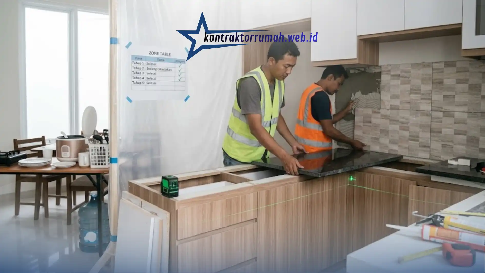

Bayangkan sudah seminggu andalkan makanan delivery karena dapur sedang dibongkar total, dompet menjerit, badan pun mulai rindu masakan rumah. Dapur memang sering disebut "jantungnya" sebuah rumah, jadi kalau area ini harus berhenti berfungsi berminggu-minggu, rutinitas dari sarapan sampai makan malam keluarga otomatis berantakan.
Tenang, melakukan renovasi dapur minimalis sebenarnya bisa disiasati agar aktivitas harianmu tetap berjalan normal. Kuncinya ada di perencanaan yang matang sebelum pekerjaan dimulai. Berikut panduan lengkapnya.
Poin Penting
- Siapkan dapur darurat di sudut lain rumah agar kebutuhan masak dasar tetap terpenuhi.
- Material siap pasang seperti kitchen set modular bisa memangkas waktu instalasi jadi 1-2 hari.
- Eksekusi bertahap per zona membuat dapur tidak pernah 100% tidak bisa dipakai sama sekali.
- Pasang tirai plastik pelindung debu agar ruangan lain tetap bersih selama renovasi.
- Sederhanakan menu masakan harian dan sepakati jam kerja tukang agar tidak mengganggu waktu penting keluarga.
Buat "Dapur Darurat" di Sudut Lain
Sebelum palu pertama diayunkan, pindahkan fungsi vital dapurmu ke area lain untuk sementara, bisa di sudut ruang makan atau area teras belakang. Siapkan meja kecil untuk meletakkan hal-hal esensial berikut.
- Rice cooker, teko listrik, atau kompor portabel.
- Beberapa piring, gelas, dan alat makan secukupnya (simpan sisanya di kardus agar tidak berdebu).
- Area cuci piring (bisa pakai baskom besar jika tidak ada akses wastafel lain).
- Galon air minum atau dispenser kecil agar tidak perlu bolak-balik ke area yang sedang direnovasi.
Semakin lengkap dapur darurat ini disiapkan, semakin kecil gangguan terhadap rutinitas harianmu.
Gunakan Material Pre-Fabricated atau Siap Pasang
Salah satu penyebab renovasi dapur memakan waktu lama adalah proses pembuatan furnitur (seperti kitchen set) atau pengecoran meja beton langsung di lokasi. Untuk menghemat waktu dan meminimalisir debu, pesanlah kitchen set custom yang dibuat di bengkel kerja vendor. Begitu selesai, mereka hanya perlu datang untuk instalasi yang biasanya cuma memakan waktu 1-2 hari.

Kitchen set modular yang dibuat di bengkel vendor mempercepat proses instalasi di lokasi hanya dalam 1-2 hari.
Beberapa material siap pasang yang bisa dipertimbangkan:
- Kitchen set modular berbahan multipleks lapis HPL.
- Meja dapur (countertop) granit atau solid surface yang sudah dipotong sesuai ukuran dari pabrik.
- Backsplash keramik motif yang tinggal ditempel, bukan dicor.
Eksekusi Secara Bertahap (Zone by Zone)
Kalau perombakannya cukup besar, diskusikan dengan tukang agar pekerjaan dilakukan bertahap. Misalnya, selesaikan dulu area basah (tempat cuci piring) agar bisa segera dipakai, baru kemudian bongkar area meja kompor dan lemari penyimpanan.
Contoh pembagian zona yang bisa diterapkan:
| Tahap | Area yang Dikerjakan | Estimasi Waktu |
|---|---|---|
| Tahap 1 | Area cuci piring & instalasi air | 2-3 hari |
| Tahap 2 | Area kompor & cerobong asap | 2-3 hari |
| Tahap 3 | Kabinet penyimpanan & rak | 3-5 hari |
| Tahap 4 | Finishing (cat, backsplash, lampu) | 2-3 hari |
Cara ini butuh koordinasi baik dengan tukang, tapi sangat membantu menjaga kewarasanmu di rumah sendiri karena dapur tidak pernah 100% tidak bisa dipakai sama sekali.
Pasang Tirai Plastik Pelindung Debu
Renovasi identik dengan debu sisa semen atau serbuk kayu yang beterbangan ke mana-mana. Agar ruang TV atau ruang keluarga tidak ikut kotor, pasang terpal atau plastik tebal sebagai penyekat antara area dapur yang direnovasi dengan ruangan lainnya. Jangan lupa menutup rapat pintu kamar tidur, dan jika perlu, tutup juga celah bawah pintu dengan kain basah untuk menahan debu halus.
Atur Ulang Jadwal Masak Keluarga Sementara
Selama renovasi berlangsung, ada baiknya menyederhanakan menu masakan harian. Pilih menu yang tidak membutuhkan banyak peralatan masak atau proses yang rumit, seperti masakan satu wajan (one-pan meals) atau makanan yang bisa dimasak dengan rice cooker serbaguna. Ini membantu mengurangi ketergantungan pada dapur utama yang sedang tidak berfungsi penuh.
Komunikasikan Jam Kerja dengan Tukang
Sepakati jam kerja renovasi yang tidak mengganggu waktu-waktu penting keluarga, misalnya jam makan atau jam istirahat anak. Beberapa keluarga memilih jam kerja dimulai agak siang agar pagi hari masih bisa dipakai untuk menyiapkan sarapan dengan tenang di dapur darurat.
Catatan dari tim Kontraktor Rumah: Kontraktor Rumah terbiasa menyusun jadwal pengerjaan per zona sejak awal proyek, sehingga dapur klien tetap bisa difungsikan sebagian selama renovasi berlangsung tanpa mengorbankan kualitas hasil akhir.
FAQ Seputar Renovasi Dapur Minimalis
Renovasi dapur minimalis memang butuh perencanaan ekstra, tapi bukan berarti aktivitas harianmu harus berhenti total. Dengan dapur darurat yang lengkap, material siap pasang, eksekusi bertahap per zona, dan koordinasi jam kerja yang jelas dengan tukang, dapurmu bisa tetap berfungsi sambil perlahan bertransformasi jadi lebih nyaman.